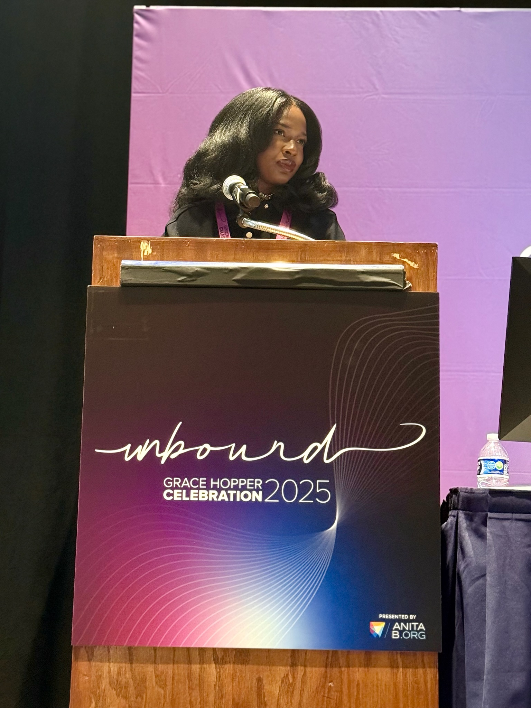

Thriving in Tech's AI Era: Turning Strengths into Career Acceleration
A talk on using AI as leverage—while doubling down on the strengths that remain inherently human.
Who I am and what I care about.
I'm a software engineer working on enterprise security, where my day-to-day work focuses on designing systems that help people make safer, more informed decisions.
I work on problems related to access, permissions, and trust—the kinds of systems that operate quietly in the background but have an major impact on security, usability, and confidence.
What I care most about is how these systems are experienced. I'm particularly interested in how AI can enhance human judgment by adding context, surfacing risk, and creating guardrails—without stripping away agency or clarity.
Outside of engineering, I write and speak about human-centered technology, decision-making, and trust in modern systems. I'm drawn to the "in-between" questions: how technical choices reflect values, how people navigate complexity, and how we build tools that respect the humans using them.
This site is a place to share that thinking—through writing, public talks, and ongoing questions I'm exploring at the intersection of technology and trust.
I give talks that help people stay grounded in the AI era—connecting human strengths to real-world decision-making.

A talk on using AI as leverage—while doubling down on the strengths that remain inherently human.
Practical guides and frameworks for building smarter systems.
Where to start with AI, which tools actually matter, and how to build credibility through results instead of buzzwords. No overthinking required.
Sunday briefings on logic frameworks, digital boundaries, and what's actually worth your attention. For people navigating the AI era without the performance anxiety.
Experience, skills, and background in one place.
Some of my creative musings deliberately separated from my core professional narrative.
A space where I demystify how tech, AI, and cybersecurity are transforming the beauty industry.
I care deeply about conversations at the intersection of trust, technology, and human judgment—especially when they help people feel more capable, informed, and included.
I'm passionate about bringing this work to underrepresented communities and expanding access to ideas that too often stay behind closed doors.
If that resonates with you, please reach out—I'd love to connect.